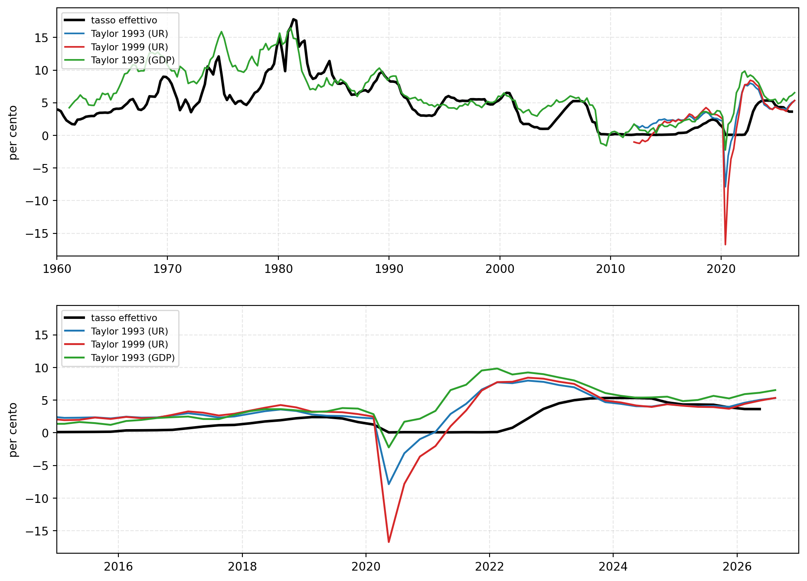
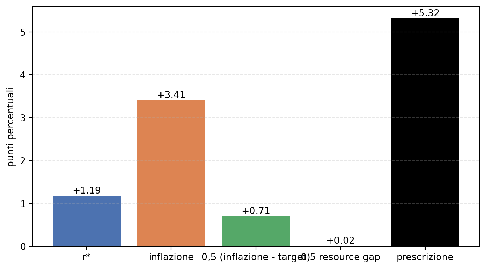
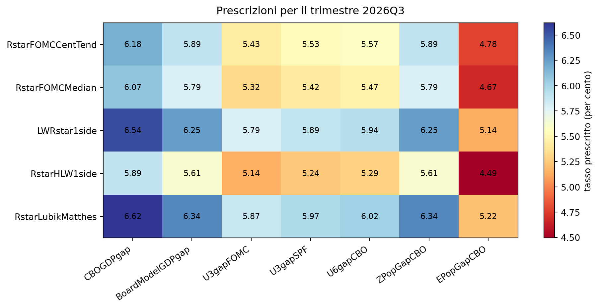
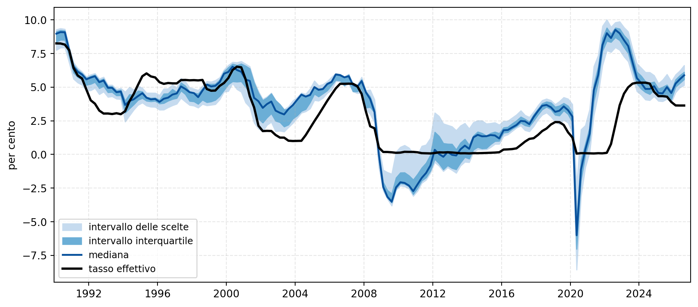
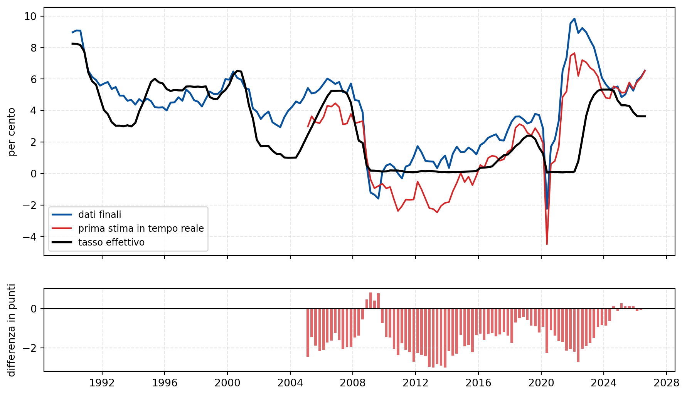
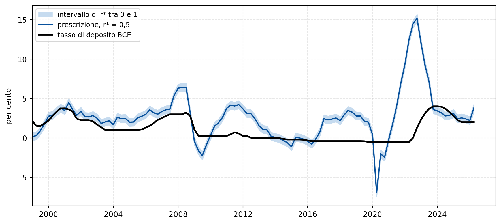

La regola di Taylor e il livello dei tassi
Prescrizioni per Stati Uniti ed Eurozona, varianti e robustezza degli input
Paolo Volterra ![]()
La regola di Taylor definisce il tasso d’interesse nominale di policy in funzione del tasso reale di equilibrio, del divario dell’inflazione dal target e dello scostamento dell’attività dal potenziale. Applicata ai dati correnti, la regola prescrive per gli Stati Uniti un tasso sensibilmente superiore a quello in vigore e, in misura minore, lo stesso vale per l’Eurozona. Il documento ricostruisce la formulazione originale e le sue varianti, calcola le prescrizioni dal dataset ufficiale della Federal Reserve di Atlanta, ne verifica la robustezza al variare delle stime del tasso reale di equilibrio e della misura del resource gap, e quantifica l’errore dovuto all’uso dei dati in tempo reale. Chiude con il confronto tra Stati Uniti ed Eurozona.
regola di Taylor, politica monetaria, tassi di interesse, r*, output gap, Federal Reserve, BCE, inflazione
1 La regola di Taylor
1.1 Formulazione
La regola di Taylor, proposta dall’economista John B. Taylor nel 1993, descrive il tasso d’interesse nominale di policy come funzione di tre elementi: il tasso reale di equilibrio r*, il divario tra inflazione effettiva e obiettivo della banca centrale, e lo scostamento dell’attività economica dal suo potenziale [1]. Nella forma oggi standard, adottata anche dalla Federal Reserve di Atlanta, la prescrizione è
i_t = r* + pi_t + 0,5 (pi_t - pi*) + 0,5 (y_t - y*_t)dove pi_t è l’inflazione, pi* il target (2 per cento) e (y_t - y*_t) il resource gap, cioè l’output gap oppure il divario di disoccupazione dal tasso naturale. La somma r* + pi_t individua il tasso neutro, che non stimola né frena l’economia; i due termini di gap indicano di quanto il tasso deve allontanarsi dalla neutralità per correggere gli squilibri correnti.
Il coefficiente complessivo sull’inflazione è pari a 1 + 0,5 = 1,5. Il fatto che superi l’unità è la condizione, nota come principio di Taylor, perché il tasso reale aumenti quando l’inflazione sale e l’economia resti stabilizzata. Se il coefficiente fosse inferiore a uno, un’accelerazione dei prezzi ridurrebbe il tasso reale e alimenterebbe la spirale inflazionistica invece di contrastarla.
La formulazione originale del 1993 differisce da quella corrente per due scelte. L’inflazione è misurata con il deflatore del prodotto interno lordo, non con l’indice dei prezzi al consumo, e il tasso reale di equilibrio è fissato costantemente al 2 per cento, valore che all’epoca appariva ragionevole e che oggi è oggetto di stima econometrica. I coefficienti 0,5 e 0,5 non derivano da una regressione: furono calibrati per riprodurre il comportamento della Federal Reserve nel periodo 1987-1992 e sono rimasti come riferimento convenzionale.
1.2 Varianti
Le versioni della regola differiscono per il gap utilizzato e per il peso a esso attribuito.
| Variante | Misura del gap | Peso | Tasso reale di equilibrio |
|---|---|---|---|
| Taylor 1993 (originale) | output gap (deflatore PIL) | 0,5 | 2 per cento (fisso) |
| Taylor 1993 (disoccupazione) | divario di disoccupazione | 0,5 | mediana delle proiezioni FOMC |
| Taylor 1999 | divario di disoccupazione | 1,0 | mediana delle proiezioni FOMC |
Un’ulteriore estensione, sviluppata in letteratura negli anni successivi, aggiunge inerzia al tasso: la prescrizione di ogni trimestre è una media ponderata tra la regola pura e il tasso del trimestre precedente, per tenere conto del fatto che le banche centrali muovono i tassi in modo graduale. Le due misure del gap danno risultati simili nel medio periodo ma divergono nelle fasi estreme del ciclo, perché output gap e divario di disoccupazione, pur legati dalla legge di Okun, hanno dinamiche differenti e tempistiche differenti.
1.3 Prescrizioni per gli Stati Uniti
Le prescrizioni statunitensi sono calcolate dal dataset trimestrale ufficiale della Federal Reserve di Atlanta, che raccoglie per il periodo 1955-2026 le serie della regola e le misure separate dei suoi input [2]. Le tre varianti considerate sono la Taylor 1993 con divario di disoccupazione, la Taylor 1999 con lo stesso gap ma peso doppio, e la formulazione originale con output gap.

Figura 1: Prescrizioni della regola di Taylor e tasso effettivo dei federal funds, Stati Uniti, 1955-2026 (pannello superiore) e dettaglio del periodo 2015-2026 (pannello inferiore).
Il pannello inferiore di Figura 1 mostra il tratto decisivo per l’analisi corrente. Tra il 2022 e il 2023 tutte le varianti prescrivevano tassi molto superiori a quelli praticati, durante il ciclo di rialzi più rapido degli ultimi decenni. Nel 2025 la prescrizione era scesa vicino al tasso effettivo, mentre nel corso del 2026 il divario si è riaperto.
| Valore (per cento) | |
|---|---|
| Voce | |
| Tasso reale di equilibrio r* | 1.19 |
| Inflazione (core PCE, quattro trimestri) | 3.41 |
| Obiettivo di inflazione | 2.00 |
| Resource gap (divario di disoccupazione) | +0.04 |
| Prescrizione Taylor 1993 (disoccupazione) | 5.32 |
| Prescrizione Taylor 1999 | 5.34 |
| Prescrizione Taylor 1993 originale (output gap) | 6.54 |
| Tasso effettivo dei federal funds | 3.63 |
| Differenza (Taylor 1993 disoccupazione) | +1.69 |
Tabella 1: Input e prescrizioni della regola di Taylor per gli Stati Uniti, terzo trimestre 2026.
Nel terzo trimestre 2026 la regola prescrive un tasso di 5,32 per cento, contro un tasso effettivo di 3,63 per cento: una differenza di 1,69 punti percentuali. La scomposizione mostra da dove proviene il segnale.

Figura 2: Scomposizione della prescrizione della regola di Taylor (variante con divario di disoccupazione) per gli Stati Uniti, terzo trimestre 2026.
Il contributo del tasso reale di equilibrio (1,19) e dell’inflazione (3,41) supera già da solo il tasso effettivo; il termine di divario dell’inflazione dal target aggiunge 0,71 punti, mentre il resource gap è praticamente nullo (+0,04). Il segnale restrittivo non nasce dunque da un’economia in surriscaldamento, ma dalla persistenza dell’inflazione sopra l’obiettivo. Il quadro è coerente con la decisione del FOMC del 16 settembre 2026, che ha portato il target range dei federal funds al 3,75-4,00 per cento [3]: la regola prescrive un livello ancora superiore a quello appena fissato.
1.4 Robustezza degli input
Il tasso reale di equilibrio e il resource gap non sono grandezze osservabili: vanno stimati, e stime diverse producono prescrizioni diverse. Il dataset della Federal Reserve di Atlanta raccoglie in fogli separati sei misure di r* (proiezioni FOMC, modelli Laubach-Williams e Holston-Laubach-Williams, Lubik-Matthes) e otto misure del gap (output gap CBO, modelli della Federal Reserve, divari di disoccupazione e di occupazione). Combinandole si ottiene una griglia di prescrizioni alternative per lo stesso trimestre.

Figura 3: Prescrizioni della regola di Taylor per il terzo trimestre 2026 al variare della misura del tasso reale di equilibrio (righe) e del resource gap (colonne).
La griglia di Figura 3 contiene trentacinque combinazioni. La prescrizione varia tra un minimo di 4,49 per cento e un massimo di 6,62 per cento, con mediana 5,79; l’ampiezza è di 2,13 punti. La scelta del resource gap pesa più di quella del tasso reale di equilibrio: a parità di r*, passare dall’output gap CBO al divario di occupazione sposta la prescrizione fino a 1,40 punti, mentre a parità di gap cambiare la stima di r* la sposta di circa 0,73 punti. In tutte le combinazioni, anche nella più accomodante, la prescrizione resta superiore al tasso effettivo.

Figura 4: Banda di prescrizioni della regola di Taylor al variare di sedici combinazioni di tasso reale di equilibrio e resource gap, Stati Uniti, 1990-2026.
La banda storica di Figura 4 mostra tre fasi distinte. Fino al 2008 l’intervallo è stretto e la mediana segue da vicino il tasso effettivo. Tra il 2009 e il 2015 la prescrizione resta sopra il tasso effettivo, che rimane al limite inferiore dello zero; nello stesso periodo il limite inferiore della banda scende in territorio negativo. Nel 2020 l’intera banda precipita su valori fortemente negativi, che nessuna banca centrale può realizzare, perché la regola non tiene conto del vincolo dello zero. Nel 2022-2023 la banda risale fino a circa 10 per cento, molto sopra un tasso effettivo che si ferma intorno al 5 per cento.
1.5 L’errore dei dati in tempo reale
Un limite noto della regola è che i suoi input vengono rivisti. Il dato di output gap e di inflazione disponibile nel momento in cui la decisione viene presa differisce da quello che risulterà a revisioni concluse. Il dataset della Federal Reserve di Atlanta contiene, accanto alle serie finali, le prime stime in tempo reale degli stessi input, il che permette di quantificare l’errore.

Figura 5: Prescrizione della regola di Taylor calcolata con dati finali e con la prima stima in tempo reale, Stati Uniti, 1990-2026; il pannello inferiore riporta la differenza.
Lo scarto assoluto medio tra la prescrizione calcolata in tempo reale e quella calcolata sui dati finali è di 1,49 punti percentuali. Come mostra il pannello inferiore di Figura 5, dal 2004 al 2024 lo scarto è quasi sempre negativo: la prima stima sottostima la prescrizione rispetto ai dati che verranno poi pubblicati. Il risultato conferma sul periodo recente il problema che Athanasios Orphanides ha documentato per gli anni settanta: la regola applicata ai dati disponibili nel momento della decisione non coincide con la regola applicata ai dati finali, e questo scarto è un elemento di fragilità nel suo uso operativo [4].
1.6 L’Eurozona
La stessa regola può essere calcolata per l’area euro a partire da serie pubbliche: l’indice armonizzato dei prezzi al consumo per l’inflazione, il prodotto interno lordo reale per l’attività e il tasso di deposito della Banca centrale europea come tasso di policy [5]. Poiché per l’area euro non esiste un tasso reale di equilibrio ufficiale paragonabile a quello statunitense, la prescrizione è calcolata per tre valori assunti di r* (zero, mezzo e uno per cento). L’output gap è ottenuto come scostamento del prodotto reale dal suo trend di lungo periodo.

Figura 6: Prescrizione della regola di Taylor per l’Eurozona e tasso di deposito della Banca centrale europea, 1999-2026. La banda copre i valori assunti del tasso reale di equilibrio tra zero e uno per cento.
| Valore (per cento) | |
|---|---|
| Voce | |
| Inflazione (indice armonizzato, var. annua) | 2.96 |
| Output gap | -0.34 |
| Tasso di deposito BCE | 2.04 |
| Prescrizione con r* = 0 | 3.27 |
| Prescrizione con r* = 0,5 | 3.77 |
| Prescrizione con r* = 1,0 | 4.27 |
Tabella 2: Input e prescrizioni della regola di Taylor per l’Eurozona, secondo trimestre 2026.
Nel secondo trimestre 2026 l’inflazione dell’area euro è al 2,96 per cento, circa un punto sopra l’obiettivo, e l’output gap è lievemente negativo (-0,34). Con un tasso reale di equilibrio pari allo 0,5 per cento, la regola prescrive 3,77 per cento, cioè 1,73 punti sopra il tasso di deposito della Banca centrale europea, fermo al 2,04 per cento. Il segnale, come negli Stati Uniti, nasce dalla componente dell’inflazione, non dall’attività.
Il confronto tra le due aree è più informativo dei valori assoluti. La differenza tra prescrizione e tasso effettivo è quasi identica (1,69 punti negli Stati Uniti, 1,73 in Eurozona), ma il contesto è diverso: con l’inflazione al 2,96 per cento e il tasso di policy al 2,04, il tasso reale dell’Eurozona resta negativo (-0,9 per cento), mentre negli Stati Uniti, con l’inflazione al 3,41 e i federal funds al 3,63, è positivo (+0,2 per cento). La Federal Reserve ha già portato il tasso reale sopra lo zero, la Banca centrale europea no.
1.7 Conclusioni
La regola di Taylor, in ogni variante e con ogni combinazione ragionevole di input, indica per la seconda metà del 2026 tassi di policy superiori a quelli in vigore, sia negli Stati Uniti sia in Eurozona. Negli Stati Uniti la prescrizione è di 5,32 per cento contro un tasso effettivo di 3,63; in Eurozona è di 3,77 contro 2,04. L’incertezza sulle stime del tasso reale di equilibrio e del resource gap non cambia il segno del risultato: anche la combinazione più accomodante prescrive un tasso superiore a quello osservato.
Il documento ha mostrato tre cautele nell’uso della regola. La prima è che essa è un parametro di riferimento e non un meccanismo automatico: il suo valore consiste nel rendere esplicito il trade-off tra inflazione e attività, non nel determinare la decisione. La seconda è che la regola non tiene conto del vincolo dello zero: nei periodi di crisi prescrive tassi fortemente negativi che nessuna banca centrale può realizzare. La terza è che i suoi input vengono rivisti: sui dati disponibili al momento della decisione, la prescrizione differisce da quella calcolata sui dati finali di circa un punto e mezzo.
Nota metodologica
Questo documento nasce dall’interazione di tre componenti. L’autore definisce le domande, esercita il giudizio critico e assume la responsabilità scientifica ed editoriale del risultato. Strumenti di intelligenza artificiale generativa sono impiegati a supporto della ricerca bibliografica, della lettura, della sintesi, della riorganizzazione argomentativa e della revisione del testo. Un’infrastruttura open source sviluppata dall’autore automatizza il reperimento, l’armonizzazione e il controllo dei dati dalle fonti statistiche ufficiali, e mantiene l’elaborazione documentata e riproducibile.
Le fonti sono pubblicamente accessibili e citate con la loro denominazione ufficiale; l’analisi è pertanto integralmente auditabile e replicabile da terzi a partire da esse. Le tabelle e i grafici sono elaborazioni dell’autore: calcoli, aggregazioni, trasformazioni e scelte di rappresentazione sono attribuibili all’autore e non agli enti produttori dei dati.
La responsabilità per le fonti utilizzate, le analisi condotte, le elaborazioni effettuate, le interpretazioni proposte e le conclusioni formulate resta interamente in capo all’autore. L’intelligenza artificiale è stata impiegata come ambiente di supporto cognitivo ed editoriale, non come fonte primaria, autore autonomo o sostituto del giudizio critico.